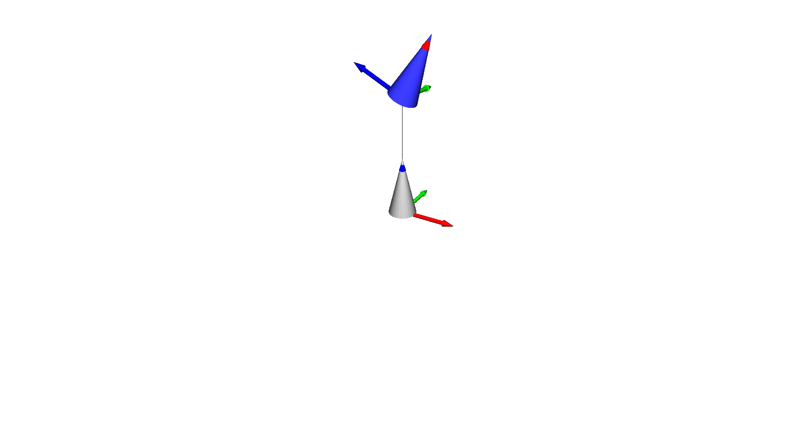

Note
Go to the end to download the full example code.
URDF with Meshes#
This example shows how to load a URDF with STL meshes. This example must be run from within the examples folder or the main folder because it uses a hard-coded path to the URDF file and the meshes.
import os
import pytransform3d.visualizer as pv
from pytransform3d.urdf import UrdfTransformManager
BASE_DIR = "test/test_data/"
data_dir = BASE_DIR
search_path = "."
while (
not os.path.exists(data_dir)
and os.path.dirname(search_path) != "pytransform3d"
):
search_path = os.path.join(search_path, "..")
data_dir = os.path.join(search_path, BASE_DIR)
tm = UrdfTransformManager()
with open(data_dir + "simple_mechanism.urdf", "r") as f:
tm.load_urdf(f.read(), mesh_path=data_dir)
tm.set_joint("joint", -1.1)
fig = pv.figure("URDF with meshes")
fig.plot_graph(
tm,
"lower_cone",
s=0.1,
show_frames=True,
whitelist=["upper_cone", "lower_cone"],
show_connections=True,
show_visuals=True,
show_name=False,
)
fig.view_init()
fig.set_zoom(1.2)
if "__file__" in globals():
fig.show()
else:
fig.save_image("__open3d_rendered_image.jpg")
Total running time of the script: (0 minutes 0.228 seconds)